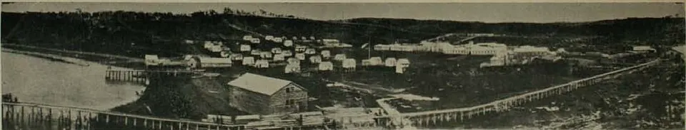

Ocupación de Tierra del Fuego y genocidio selk'nam

Tras fundar el Fuerte Bulnes (1843) y Punta Arenas (1848), el Estado chileno buscó poblar el extremo sur. En 1876 el gobernador Diego Dublé Almeyda trajo las primeras ovejas desde las Malvinas, y la demanda de lana de la industria textil británica convirtió a Magallanes en tierra de estancias. El Tratado de Límites con Argentina (1881) dividió la Isla Grande de Tierra del Fuego entre ambos países. Desde 1880 llegaron buscadores de oro, y sus primeros encuentros con los selk'nam fueron violentos, con capturas y abusos contra mujeres.
En 1883 el Estado entregó la primera concesión ganadera en la isla, y en 1889-1890 José Nogueira obtuvo cerca de un millón de hectáreas. En 1893 Sara Braun y Mauricio Braun fundaron la Sociedad Explotadora de Tierra del Fuego, que llegó a concentrar casi todas las tierras de pastoreo del lado chileno. Las cercas cortaron los caminos de caza de los selk'nam, que empezaron a cazar ovejas. La respuesta de estancieros y empleados fue una campaña de exterminio: según Memoria Chilena, algunas grandes compañías pagaron recompensas por cada selk'nam muerto. El informe de la Comisión Verdad Histórica y Nuevo Trato acusa a la Sociedad Explotadora de haber encabezado matanzas. La violencia ocurrió a ambos lados de la frontera.
Hacia 1890 el gobierno cedió la isla Dawson a los misioneros salesianos, que fundaron allí una misión; en 1896 abrieron otra en Río Grande, en el lado argentino. Muchos sobrevivientes fueron llevados a Dawson. La concentración de personas propagó tuberculosis, influenza, sarampión y otras enfermedades, y cuando la misión cerró, hacia 1911-1912, casi no quedaban sobrevivientes. En la Patagonia continental, los aónikenk perdieron sus tierras de caza ante las estancias, y los kawésqar y yaganes sufrieron la acción de loberos, misiones y epidemias.
Muchos historiadores y las propias comunidades califican lo ocurrido como genocidio. Se discute el papel del Estado: no envió un ejército, como en la Ocupación de la Araucanía, pero entregó las concesiones, toleró la violencia y organizó traslados. También se debate el papel de las misiones, vistas como refugio por unos y como encierro mortal por otros. Durante décadas se repitió que los selk'nam estaban «extintos»; sus descendientes rechazaron esa idea, y la Ley 21.606, publicada el 19 de octubre de 2023, los incorporó a la Ley Indígena como pueblo reconocido.
Versión para niños
Hace unos 140 años llegaron a Tierra del Fuego, la gran isla del extremo sur, buscadores de oro y empresarios que querían criar miles de ovejas. El gobierno de Chile les entregó enormes terrenos. Pero esas tierras eran el hogar de los selk'nam, que vivían de cazar guanacos. Los cercaron y los persiguieron, y muchos murieron por la violencia y por enfermedades. Hoy muchos historiadores llaman a esto genocidio: intentar hacer desaparecer a un pueblo. Sus descendientes siguen presentes, y en 2023 Chile los reconoció por ley.
Para maestros
Nivel sugerido: 1° medio
Objetivo: Analizar la ocupación del extremo sur como parte de la expansión territorial del Estado en el siglo XIX y sus consecuencias para los pueblos australes, usando con precisión el concepto de genocidio. La fecha es un rango (c. 1880–1910) porque fue un proceso; el año 1883 corresponde a la primera concesión ganadera en la isla.
Preguntas para la clase:
- ¿Qué actores participaron en la ocupación de Tierra del Fuego (Estado, empresas, buscadores de oro, misiones) y qué hizo cada uno?
- ¿Por qué muchos historiadores usan la palabra genocidio para lo que vivieron los selk'nam?
- ¿Qué significa para un pueblo que se le declare «extinto» cuando sus descendientes siguen vivos?
Actividad (20–30 min): Con el texto de esta nota, los estudiantes construyen una línea de tiempo con 1843, 1876, 1881, 1883, 1890, 1893, 1911-1912 y 2023, y marcan con colores si cada hecho fue decisión del Estado, de empresas, de misiones o de los propios selk'nam. Luego la comparan con Ocupación de la Araucanía: ¿qué se parece y qué es distinto? Cierre: observar la imagen de la misión de Dawson y preguntar qué muestra y qué no muestra.
Fuentes sugeridas: Memoria Chilena; Museo Chileno de Arte Precolombino; Biblioteca del Congreso Nacional (BCN).
Objetivos de Aprendizaje (Currículum Nacional)
- 6° básico · HI06 OA 05 Describir cómo se conformó el territorio de Chile durante el siglo XIX … entre otros factores
- 1° medio · HI1M OA 13 Describir el proceso de ocupación de Valdivia, Llanquihue, Chiloé y el estrecho de Magallanes … las relaciones con los pueblos originarios que habitaban esos lugares
- 1° medio · HI1M OA 24 Evaluar … las relaciones de conflicto y convivencia con los pueblos indígenas (aymara, colla, rapa nui, mapuche, quechua, atacameño, kawéskar, yagán, diaguita)
Fuentes
- Memoria Chilena — Onas o Selk'nam
- Memoria Chilena — Sociedad Explotadora de Tierra del Fuego
- Memoria Chilena — La economía ovejera en Magallanes (1876-1930)
- Memoria Chilena — Pueblos australes de Chile
- Museo Chileno de Arte Precolombino — Selk'nam: historia
- Biblioteca del Congreso Nacional — Ley 21.606, incorpora al pueblo selk'nam entre las etnias reconocidas (2023)
Revisión humana pendiente. Cómo se revisa · Reportar un error
Cómo citar: Historia de Chile. (2026). Ocupación de Tierra del Fuego y genocidio selk'nam. En Historia de Chile: atlas y línea de tiempo. https://moises-salgado.github.io/historia-de-chile/momento/ocupacion-de-tierra-del-fuego-y-genocidio-selk-nam.html